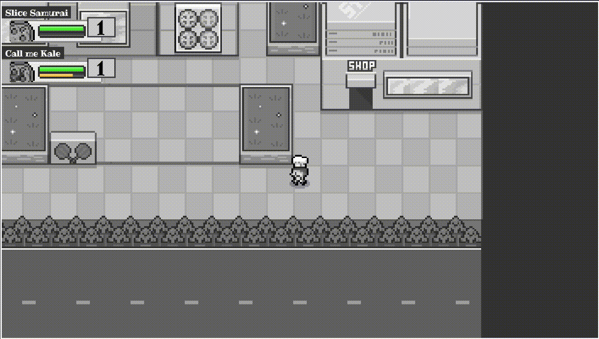

1920s-themed RPG where players navigate the journey of an ex-mobster transformed into a pizza maker. Implementing engaging narratives, interactive elements, and character development within the game using JavaScript.
Mozzarella Mobster on GitHubCo-created Jaca Records, a record-collection-themed website using Vue.js, C#, and SQL Server. It features a dynamic, user-friendly interface connected to a custom-built database, allowing users to manage their music library with ease.
JACA Records on GitHub